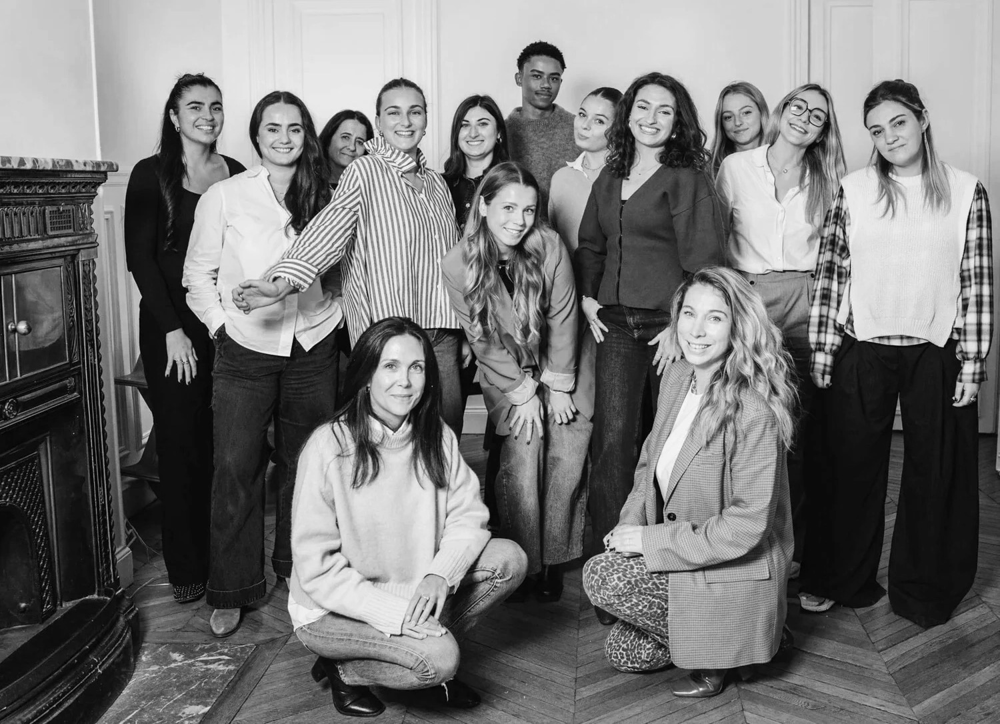
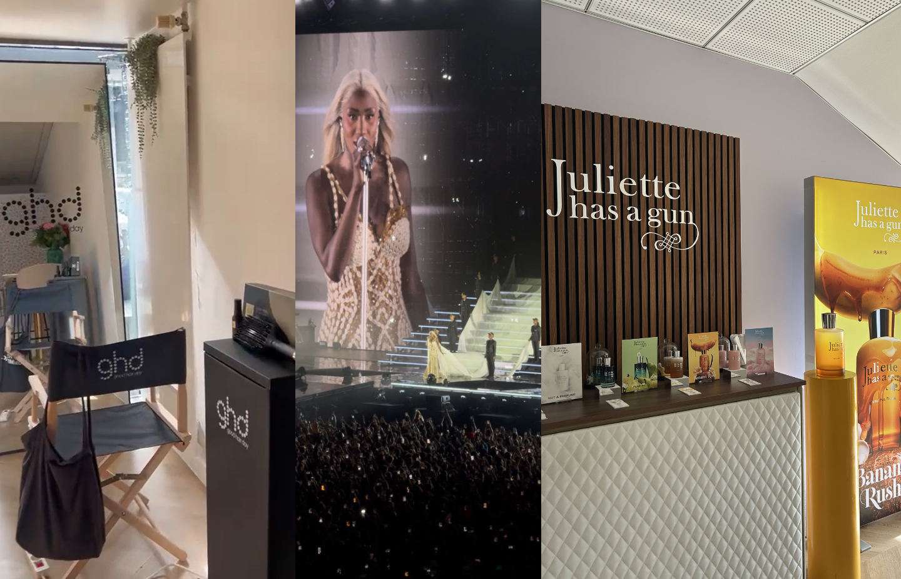
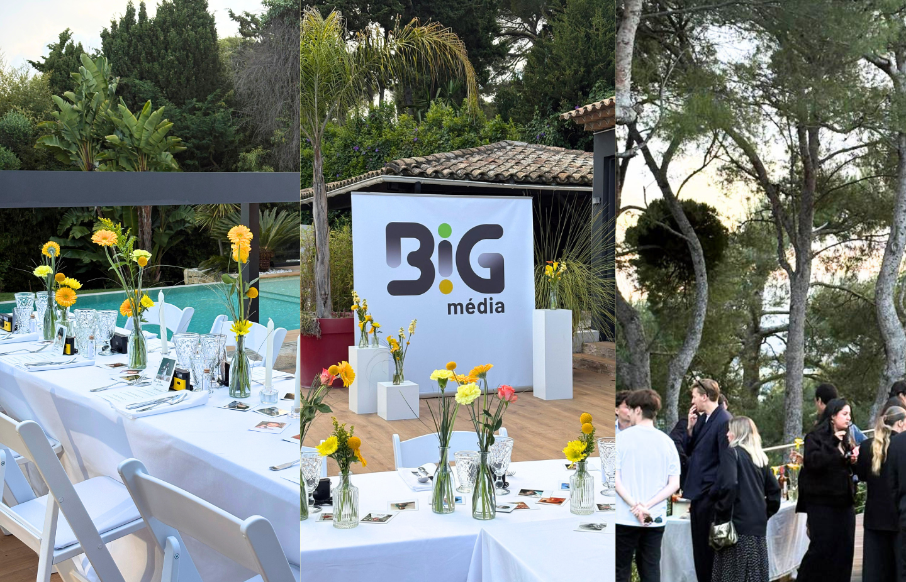
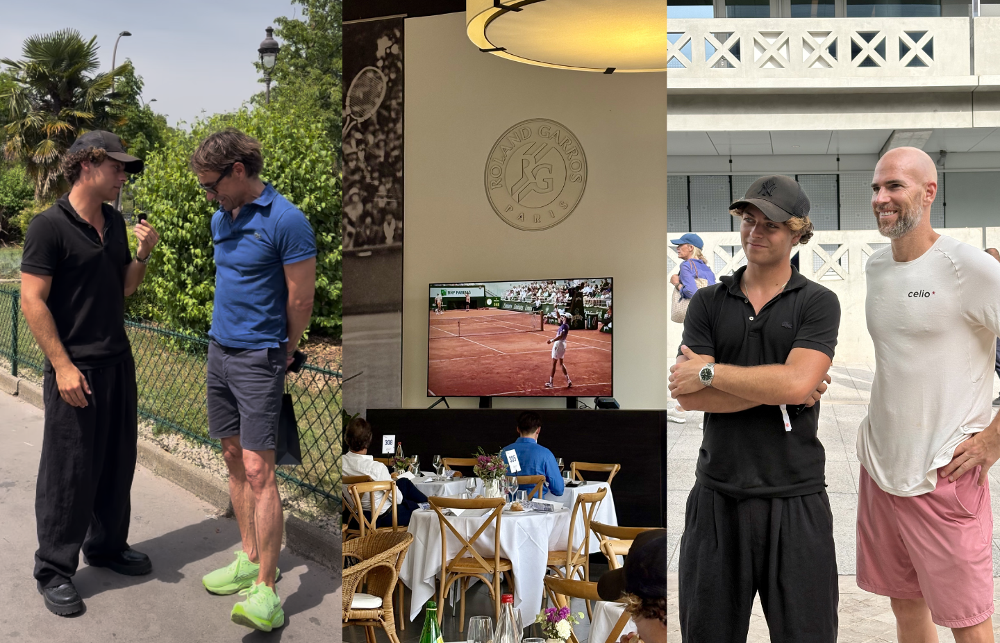
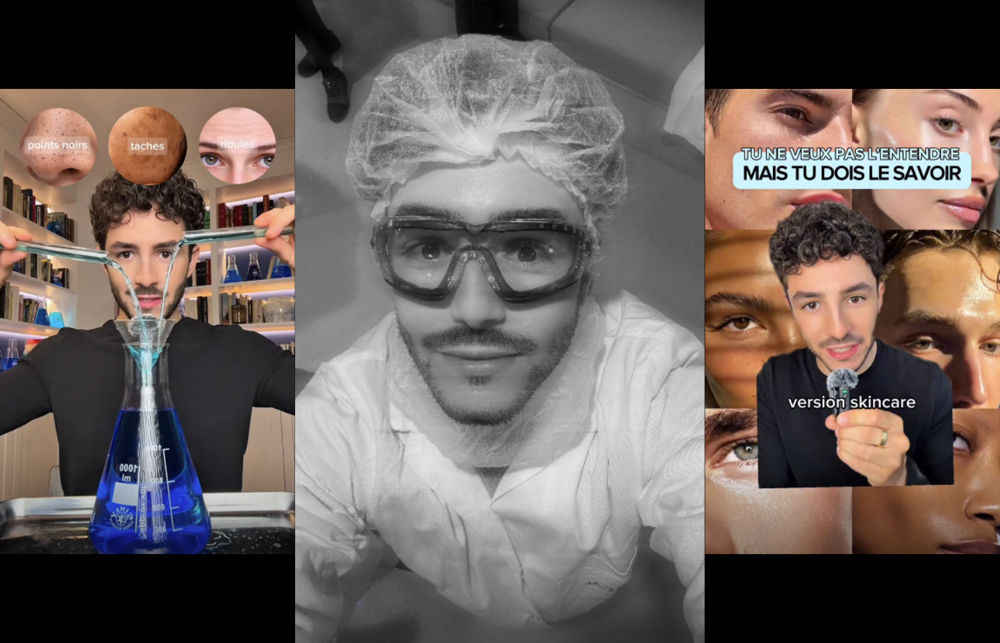

|
 |
LA SÉLECTION DE L’ANNÉE Des moments.
Des rencontres.
De l’impact.Cette année, nous avons partagé de beaux moments avec les marques et les créateurs qui nous font confiance. Du Stade de France à Cannes, en passant par Roland-Garros et les coulisses d’Yves Rocher, on vous emmène découvrir quatre projets qui nous tiennent à cœur. |
| CES MOMENTS QU’ON AIME PARTAGER |
|
01 / LOGE · ÉVÉNEMENT GHD × Juliette Has a Gun La beauté entre en scène. |
 |
Avant de vibrer au concert d’Aya Nakamura, place à un moment beauté ! Au Stade de France, nous avons réuni GHD et Juliette Has a Gun dans une loge pensée pour les créateurs invités. Coiffure, découverte des parfums et attentions personnalisées : tout était réuni pour faire connaissance avec les deux marques. 13 créateurs | 122 contenus | 7,2 M vues au total |
Entrez dans la loge ↗ |
02 / FESTIVAL DE CANNES · ÉVÉNEMENT Bpifrance – Big Média Le culot passe à table. |
 |
À Cannes, nous avons imaginé pour Big Média un dîner où l’on prend le temps de se raconter. Chaque invité découvrait une photo de lui enfant à sa place. L’occasion de raconter ce qu’il rêvait de devenir. Avec Marine Barnérias, entrepreneurs, créateurs et talents du cinéma se sont retrouvés autour des histoires et des audaces qui les rapprochent. 63 contenus | 1,92 M de reach | 2,24 M impressions |
Revivez le dîner ↗ |
03 / BRAND CONTENT Vincent Nadal × Roland-Garros Au plus près du jeu. |
 |
Direction Roland-Garros avec Vincent Nadal, accompagné d’un partenaire dans la mode ! Nous avons suivi le rythme du tournoi et la passion de Vincent pour le tennis. Vidéos et stories tournées sur place ont permis à sa communauté de vivre cette journée à ses côtés. 3 vidéos produites | 16 interviews | 1 journée sur place |
Rendez-vous au bord du court ↗ |
04 / CAMPAGNE D’INFLUENCE @skincarebysamy × Yves Rocher L’expertise se raconte. |
 |
Avec Samy, on pousse la porte des coulisses d’Yves Rocher. Au fil d’une série de contenus, il partage les savoir-faire de la marque et ses conseils pour la routine skincare. Un ton direct, de la pédagogie et des gestes faciles à adopter : une belle façon de rapprocher la marque de sa communauté. Immersion de marque / Pédagogie / Conseils produits Découvrez la série avec Samy ↗ |
Et pour
votre marque ?On a déjà envie
de faire équipe avec vous. Vous avez une envie, un lancement en tête ou un défi à relever ? Découvrez nos sept offres. Ensemble, trouvons celle qui donnera toute sa place à votre marque. |
01. | Conseil en stratégie | Donner le cap. | Parlons de vos ambitions et donnons le cap à votre marque. Insights, concepts créatifs et stratégie social media : nous vous accompagnons pour des prises de parole qui vous ressemblent. | |
|
| 02. | Affiliation influence | Piloter la performance. | Faisons grandir vos ventes grâce à l’influence et à l’affiliation. Nous choisissons les bons leviers, suivons les résultats avec vous et ajustons les activations pour soutenir votre acquisition au quotidien. | |
|
| 03. | Gifting | Prolonger l’expérience. | Faisons de votre colis une belle surprise. Choix des créateurs, concept, personnalisation et envoi : nous soignons chaque détail, avec des solutions responsables et réutilisables pour prolonger l’expérience de marque. | |
|
| 04. | UGC | Incarner la marque. | Trouvons les créateurs qui racontent votre marque avec naturel. Concepts, briefs et suivi : nous imaginons des contenus spontanés, adaptés aux réseaux sociaux et pensés pour vivre après la campagne. | |
|
| 05. | Événementiel | Créer la rencontre. | Un lancement à célébrer, une communauté à réunir ? Du lieu aux invités, de la scénographie aux expériences, imaginons ensemble un événement à votre image, qui donne envie d’être là. | |
|
| 06. | Programme ambassadeurs | Construire dans la durée. | Donnons une suite à vos collaborations. Sélection des ambassadeurs, activations et accompagnement : nous faisons grandir une communauté engagée, qui connaît votre marque et aime la partager dans la durée. | |
|
|
|
07. L’OFFRE LOGE Votre marque aux premières loges.Invitez les créateurs à vivre un moment privilégié avec votre marque, le temps d’un concert ou d’un événement sportif. Nous préparons une loge VIP à vos couleurs, un casting sur mesure et une expérience créative personnalisée. Un reach minimum garanti est défini pour l’activation, avec la possibilité d’y associer un volet paid complémentaire. |
LA SUITE, AVEC VOUS Et si on écrivait
la prochaine
Anekdote ?Votre projet est déjà bien dessiné, ou encore au stade de l’envie ? Nous serons ravis d’en parler avec vous et de lui donner forme ensemble. |
29 rue de Mogador, Paris
21 rue Haxo, Marseille Instagram / LinkedIn / Notre site Se désinscrire / Confidentialité |